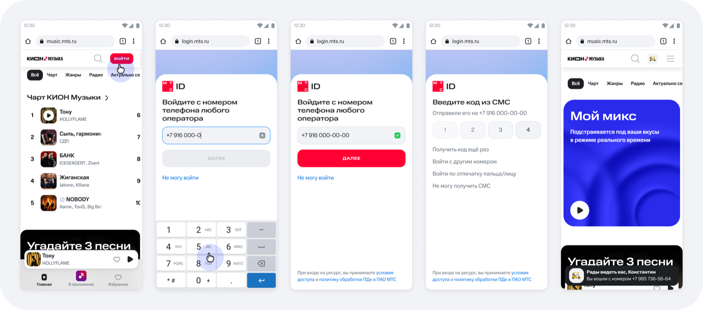
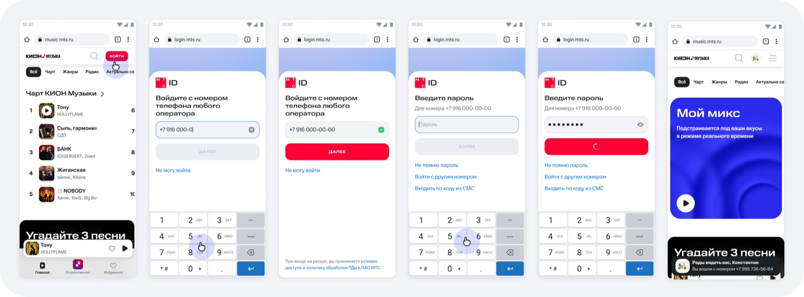
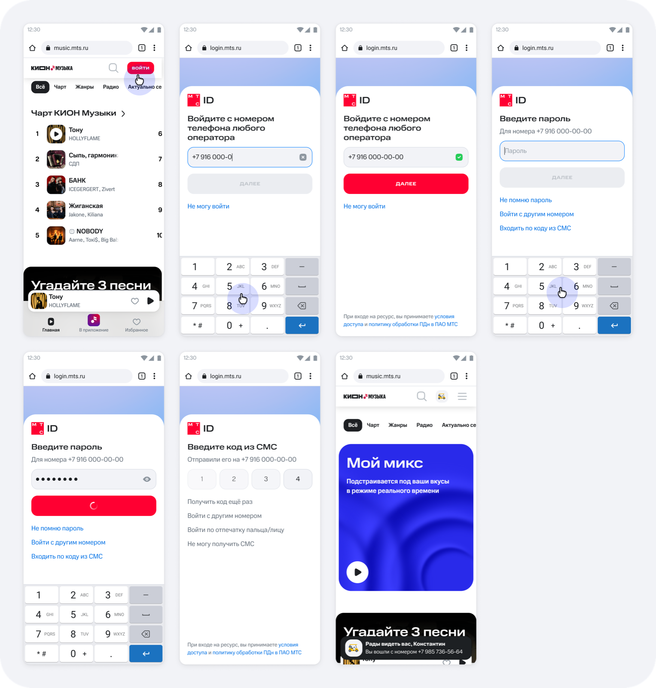
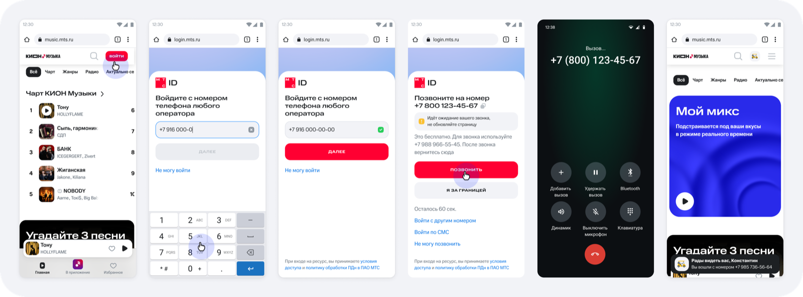
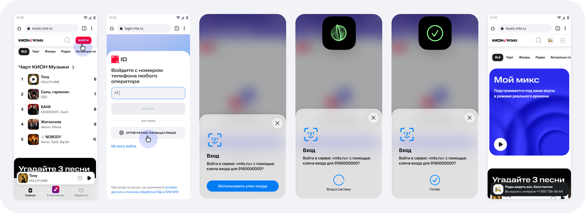

01Клиентские
ФОКУС
Успешная аутентификация без лишних шагов
Клиентские
пути.
ФОКУСУспешная аутентификация без лишних шагов
ПРОДУКТMTS ID
ПОЛЬЗОВАТЕЛЬАбоненты МТС и других операторов
СЦЕНАРИИSMS, пароль, 2FA, passkey
ПЛАТФОРМАWeb Desktop + Web Mobile
Экранные состояния
В галерее собраны ключевые состояния входа, включая responsive-версии и разные способы аутентификации.





